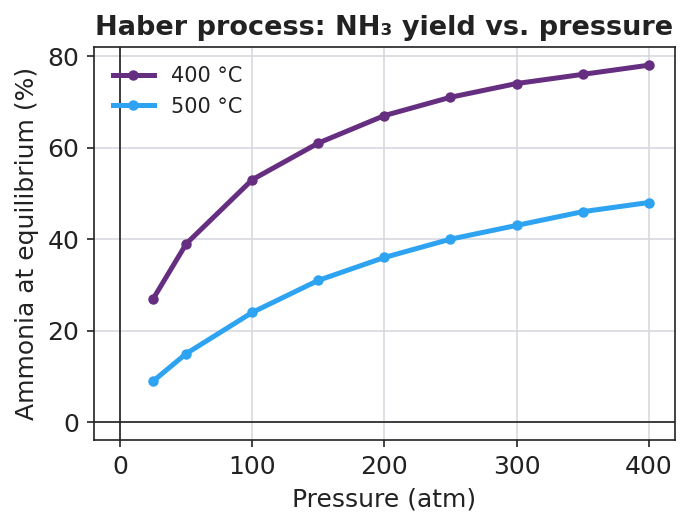

01 Phenomenon
Industrial chemists want to make ammonia (NH₃) — the basis of the fertilizer that feeds about half the world. The reaction uses two cheap ingredients: nitrogen from the air and hydrogen.
N₂(g) + 3 H₂(g) ⇌ 2 NH₃(g)
But the reaction is reversible — as fast as ammonia forms, it breaks back apart, and the reaction stalls at a low yield. For decades nobody could make ammonia profitably. Fritz Haber’s breakthrough was not a new reaction — it was a recipe of conditions: high pressure, a chosen temperature, a catalyst, and pulling the ammonia out as it forms. Each choice nudges this same reaction toward more product.
02 Driving question
How do you tilt a reversible reaction's balance toward the product you want?
03 Notice & wonder
| I notice… | I wonder… |
|---|---|
Turn & Talk #1: Look at the yield chart your teacher is projecting — raising the pressure raised the ammonia yield. Count the gas molecules on each side of N₂(g) + 3 H₂(g) ⇌ 2 NH₃(g). In one sentence, why might squeezing the gases (raising pressure) help the product side?
04 Initial model
Before your teacher names any rule: a reversible reaction sits at equilibrium, so the forward and reverse rates are equal and the amounts of reactant and product stop changing.
A + B ⇌ C
Now you suddenly add more A.
Which reaction now has more to work with — the forward or the reverse? _______________
So which rate speeds up first? _______________
While the system re-balances, does the amount of C go up or down? _______________
Sketch a quick “before → after” picture of the amount of C:
| Before adding A | Right after adding A | At the new balance | |
|---|---|---|---|
| Amount of C |
05 Investigate
Part 1 — FeSCN²⁺ color-change equilibrium
The iron–thiocyanate reaction is reversible, and its color shows the position of the equilibrium:
Fe³⁺(aq, pale yellow) + SCN⁻(aq, colorless) ⇌ FeSCN²⁺(aq, deep red)
Deeper red = more product (FeSCN²⁺). Fading red = the system shifted back toward reactants. Split your equilibrium mixture across four tubes and apply one stress to each. Record the color change and the shift direction.
| Tube | Stress applied | Color change you observe | Shift direction (← reactants / → products / none) |
|---|---|---|---|
| 1 | Add 0.1 M Fe(NO₃)₃ (more Fe³⁺) | ||
| 2 | Add 0.1 M KSCN (more SCN⁻) | ||
| 3 | Add a pinch of Na₂HPO₄ / NaF (removes Fe³⁺) | ||
| 4 | Control — add a few drops of water only |
Pattern question: Adding a reactant and removing a reactant pushed the equilibrium in opposite directions. State the pattern in one sentence:
Part 2 — Temperature as a stress (teacher demo: CoCl₂)
[Co(H₂O)₆]²⁺(pink) + 4 Cl⁻ ⇌ [CoCl₄]²⁻(blue) + 6 H₂O (forward reaction is endothermic)
Treat heat like a substance. Because the forward reaction absorbs heat, heat acts like a reactant on the left.
| Stress applied | Color you observe | Shift direction |
|---|---|---|
| Warm the tube (add heat) | ||
| Cool the tube (remove heat) |
Part 3 — Reading the Haber yield chart
Look at figures/ammonia_yield_pressure.png:

As pressure increases, does the ammonia yield go up or down? _______________
The product side (2 NH₃) has fewer gas molecules than the reactant side (1 N₂ + 3 H₂). Use that to explain why higher pressure raises the yield.
- At every pressure, the cooler 400 °C curve is above the hotter 500 °C curve. The forward reaction is exothermic (it releases heat). Why does a lower temperature give a higher yield?
06 Make it make sense
For each stress, state the shift direction (toward reactants ← or toward products →, or no shift) and justify it with Le Châtelier reasoning.
1. FeSCN²⁺ equilibrium: Fe³⁺(aq) + SCN⁻(aq) ⇌ FeSCN²⁺(aq, red). You add more SCN⁻.
- Shift direction: _______________
- Justification: _______________________________________________
- Predicted color change: _______________
2. Haber equilibrium: N₂(g) + 3 H₂(g) ⇌ 2 NH₃(g), ΔH = −92 kJ. You increase the pressure.
- Shift direction: _______________
- Justification (count gas molecules): _______________________________________________
3. Haber equilibrium: N₂(g) + 3 H₂(g) ⇌ 2 NH₃(g), ΔH = −92 kJ. You raise the temperature.
- Shift direction: _______________
- Justification (use the sign of ΔH — is heat a reactant or a product?): _______________________________________________
4. Haber equilibrium: N₂(g) + 3 H₂(g) ⇌ 2 NH₃(g). You add an iron catalyst.
- Effect on the equilibrium position: _______________
- Justification: _______________________________________________
07 Key vocabulary
- Le Châtelier's principle
- the rule that when a system at equilibrium is disturbed by a stress (a change in concentration, pressure, or temperature), the system shifts in the direction that partially relieves the stress and reaches a new equilibrium
- equilibrium shift
- a change in the relative amounts of reactants and products as a stressed system re-balances; a shift "right" (toward products) makes more product, a shift "left" (toward reactants) makes more reactant; the shift continues only until the forward and reverse rates are equal again
- stress
- a change imposed on a system at equilibrium — adding or removing a reactant or product, changing the pressure/volume of a gas system, or changing the temperature; a catalyst is *not* a stress, because it speeds the forward and reverse reactions equally and does not shift the equilibrium position
Use each term in a sentence about today’s investigation. Do not copy the definition — describe something you actually did, saw, or predicted.
Le Châtelier’s principle: _______________________________________________ _______________________________________________
equilibrium shift: _______________________________________________ _______________________________________________
stress: _______________________________________________ _______________________________________________
08 Revise your model
Return to your Initial Model (the A + B ⇌ C “add A” sketch). Now you can name what happened.
The change you imposed (adding A) is called a __________.
The system’s response — C going up until the rates re-balance — is called an equilibrium __________.
The system shifted in the direction that __________ the stress.
Now act as the Haber plant engineer. For N₂(g) + 3 H₂(g) ⇌ 2 NH₃(g), ΔH = −92 kJ, specify a change in each lever that would increase the ammonia yield:
| Lever | Change that increases NH₃ yield | Why (Le Châtelier) |
|---|---|---|
| Pressure | ||
| Temperature | ||
| Concentration (of NH₃) | ||
| Catalyst |
Then finish this Because / But / So sentence about the temperature trade-off:
Lowering the temperature should raise the ammonia yield because __________________________________________, but __________________________________________, so __________________________________________.
09 Exit ticket
Consider a different reversible reaction — the contact process used to make sulfuric acid:
2 SO₂(g) + O₂(g) ⇌ 2 SO₃(g), ΔH = −198 kJ (the forward reaction is exothermic)
- Predict the shift if you increase the pressure. Justify by counting the gas molecules on each side.
Shift: _______________ — because: _______________________________________________
- Predict the shift if you raise the temperature. Justify using the sign of ΔH (is heat a reactant or a product here?).
Shift: _______________ — because: _______________________________________________
- A factory adds a vanadium(V) oxide catalyst. What happens to the equilibrium position, and why?
10 Explore further
- Le Châtelier color-change investigation (CoCl₂ equilibrium): The cobalt(II) chloride equilibrium [Co(H₂O)₆]²⁺ (pink) + 4Cl⁻ ⇌ [CoCl₄]²⁻ (blue) + 6H₂O is a vivid, reversible color demonstration. Adding concentrated HCl (raises Cl⁻) shifts the equilibrium right → blue. Adding water (dilutes Cl⁻) shifts it left → pink. Warming the tube shifts it toward blue (forward reaction is endothermic); cooling shifts it toward pink. Students *see* the equilibrium move and reverse on demand. (Teacher demo — concentrated HCl is corrosive; goggles, gloves, fume hood.)
- FeSCN²⁺ equilibrium (student-safe color change): Fe³⁺(aq) + SCN⁻(aq) ⇌ FeSCN²⁺(aq, deep red). Adding more Fe³⁺ or more SCN⁻ deepens the red (shift right); adding a precipitating agent that removes Fe³⁺ fades it (shift left). This is the standard student-run Le Châtelier lab and is the basis for the Investigation below.
- Javalab equilibrium simulator: the Javalab "chemical equilibrium / Le Châtelier" interactive lets students add or remove reactant/product and change temperature, watching the bar of concentrations re-balance. No login required; use it as a virtual alternative or a pre-lab.
- Haber process case study: students read the pressure/temperature yield chart (`figures/ammonia_yield_pressure.png`) and argue for the conditions a real plant should use, weighing yield against cost and rate.